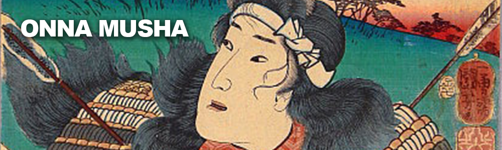
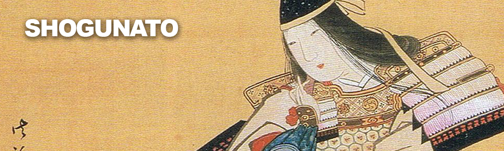
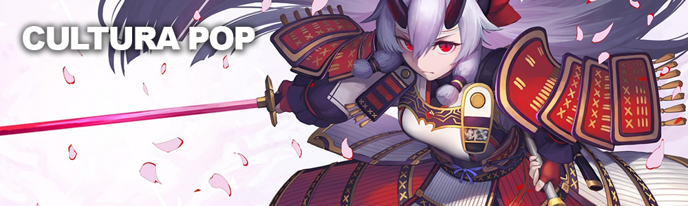

Tomoe Gozen: Onna Musha
Onna-Musha: uma mulher samurai treinada em artes marciais e armas para defender sua casa e sua família. Diferente das Onna-bugueisha (especializadas em defesa), Tomoe fazia parte da linha de frente e da força ofensiva na batalha.
Tomoe lutou na Guerra de Guenpei (de 1180 a 1185) que marcou o fim da era Heian (794-1185) e o início da era dos Samurais. Depois de duras e sangrentas batalhas em que Tomoe se estabeleceu como Líder Comandante (ippo no taisho) graças à sua coragem como guerreira, habilidades com arco e flecha e espada, o seu clã, Minamoto, venceu o clã rival (Taira) e iniciou o primeiro Shogunato.
Cultura Pop: Além de inspiração para literatura, jogos, quadrinhos e filmes, acontece todos os anos, em Kyoto, o "Festival das Eras" (Jidai Matsuri) do qual faz parte um "desfile" com em torno de 2 mil pessoas caracterizadas como personalidades históricas e entre elas Tomoe Gozen é figura recorrente.
FONTES:
Tofugu
Smart Bitches, Trashy Books
Wikipedia
Sobre mim
{ Midori Korin }